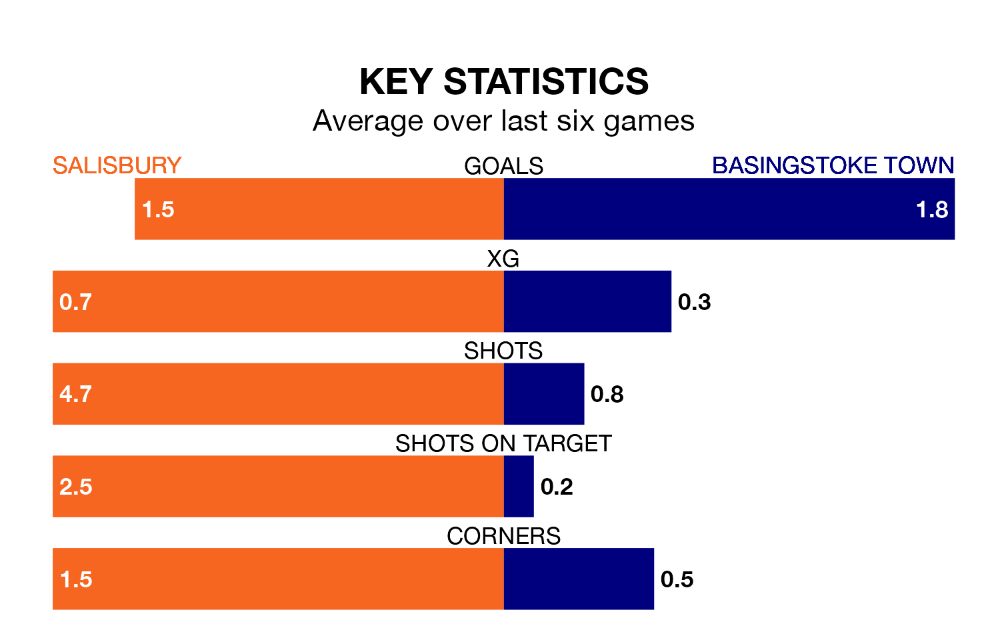

Salisbury are heavy favourites to keep all three points at home in Monday's kick-off against Basingstoke Town.
Salisbury, who sit third in the Southern League Premier South with 36 games played, are priced at 1.6 to seal victory at the Raymond McEnhill Stadium.
Sitting seven places and 17 points behind them in the table, Basingstoke are 4.0 to win with *Betting Company*, while the draw is at 3.7.
Salisbury are in mixed form in the Southern League Premier South, with one win and four draws from their last six games.
With five wins and a draw over that period, Basingstoke's form is much better – they have taken 16 points from 18, compared to the home team's seven.
With 64 goals in 36 games so far this season, Town are scoring more than average in the league with 1.8 goals per game. But they are conceding more than average too, letting in 72 goals at a rate of 2.0 per game.
Salisbury, meanwhile, are average scorers, with 1.7 goals per game. They have conceded 1.1 goals per game.
Salisbury's last match was on Saturday, a 3-3 draw against Swindon Supermarine.
Basingstoke beat Gosport Borough 3-0 last time out, on Friday.
Updated: 10:31 (UTC), 31/03/24